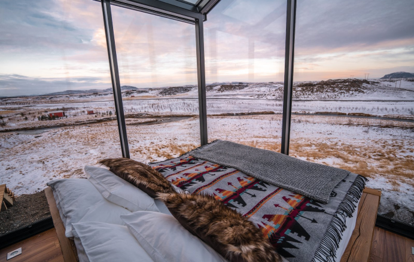
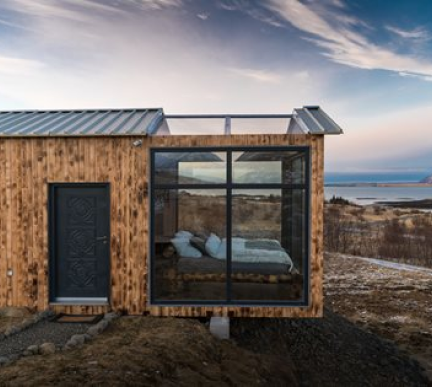
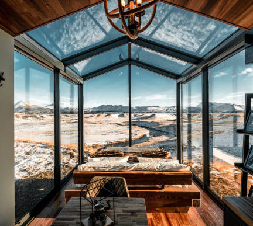
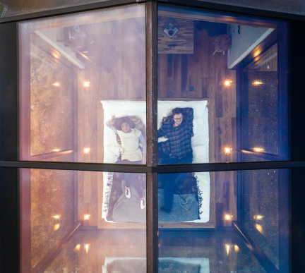
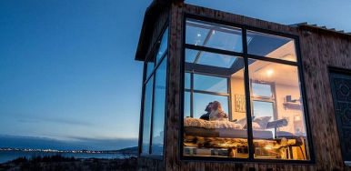

from $3.200 per night
Løvtag’s three exclusive and comfortable cabins, Et, Ro and Ly, are designed by architect Sigurd Larsen. They all have an open space with a double bed, a double sofa bed, kitchen, separate toilet and an outdoor shower. On the roof, surrounded by treetops, there is a terrace, which is about nine meters above ground. The cottages are built around tall, old trees that go through the entire cottage from floor to ceiling.
Read More    Løvtag’s three exclusive and comfortable cabins, Et, Ro and Ly, are designed by architect Sigurd Larsen. They all have an open space with a double bed, a double sofa bed, kitchen, separate toilet and an outdoor shower. On the roof, surrounded by treetops, there is a terrace, which is about nine meters above ground. The cottages are built around tall, old trees that go through the entire cottage from floor to ceiling.
Read MoreVesterborg, Denmark
+123 456 789 000
info@theglasshuts.com Instagram, Facebook, Twitter from $3.200 per night